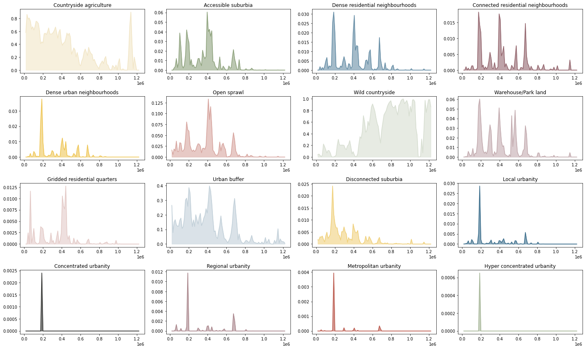
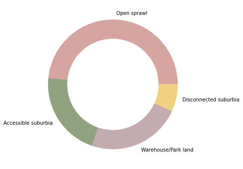

Geographical distribution and coverage of signature types¶
import xarray
import rioxarray
import numpy
import geopandas
import contextily
import matplotlib
import matplotlib.pyplot as plt
import urbangrammar_graphics as ugg
from shapely.geometry import Point
from matplotlib_scalebar.scalebar import ScaleBar
# import squarify
Geographical distribution along N-S and E-W axes¶
signatures = rioxarray.open_rasterio("../../urbangrammar_samba/spatial_signatures/signatures/signatures_raster.tif")
unique = numpy.unique(signatures[0])
unique = unique[~numpy.isnan(unique)]
outliers = [93, 96, 97, 98]
unique = unique[~numpy.isin(unique, outliers)]
total_by_row = signatures[0].count("x")
total_by_col = signatures[0].count("y")
types = {
0: "Countryside agriculture",
10: "Accessible suburbia",
30: "Open sprawl",
40: "Wild countryside",
50: "Warehouse/Park land",
60: "Gridded residential quarters",
70: "Urban buffer",
80: "Disconnected suburbia",
20: "Dense residential neighbourhoods",
21: "Connected residential neighbourhoods",
22: "Dense urban neighbourhoods",
90: "Local urbanity",
91: "Concentrated urbanity",
92: "Regional urbanity",
94: "Metropolitan urbanity",
95: "Hyper concentrated urbanity",
}
proportion_by_lat = {}
proportion_by_lon = {}
for label in unique:
proportion_by_lat[types[label]] = ((signatures[0] == label).sum("x") / total_by_row)
proportion_by_lon[types[label]] = ((signatures[0] == label).sum("y") / total_by_col)
fig, axs = plt.subplots(4, 4, figsize=(20, 12))
for label, ax in zip(proportion_by_lat, axs.flatten()):
proportion_by_lat[label].plot(ax=ax)
ax.set_title(label)
plt.tight_layout()
fig, axs = plt.subplots(4, 4, figsize=(20, 12))
for label, ax in zip(proportion_by_lon, axs.flatten()):
proportion_by_lon[label].plot(ax=ax)
ax.set_title(label)
plt.tight_layout()

Resample and assign color¶
types = {
"0_0": "Countryside agriculture",
"1_0": "Accessible suburbia",
"3_0": "Open sprawl",
"4_0": "Wild countryside",
"5_0": "Warehouse/Park land",
"6_0": "Gridded residential quarters",
"7_0": "Urban buffer",
"8_0": "Disconnected suburbia",
"2_0": "Dense residential neighbourhoods",
"2_1": "Connected residential neighbourhoods",
"2_2": "Dense urban neighbourhoods",
"9_0": "Local urbanity",
"9_1": "Concentrated urbanity",
"9_2": "Regional urbanity",
"9_4": "Metropolitan urbanity",
"9_5": "Hyper concentrated urbanity",
}
cmap = ugg.get_colormap(20, randomize=False)
cols = cmap.colors
symbology = {'0_0': cols[16],
'1_0': cols[15],
'3_0': cols[9],
'4_0': cols[12],
'5_0': cols[21],
'6_0': cols[8],
'7_0': cols[4],
'8_0': cols[18],
'2_0': cols[6],
'2_1': cols[23],
'2_2': cols[19],
'9_0': cols[7],
'9_1': cols[3],
'9_2': cols[22],
'9_4': cols[11],
'9_5': cols[14],
}
symbology = {types[k]:v for k, v in symbology.items()}
sig = "Countryside agriculture"
x = proportion_by_lat[sig].fillna(0).values
y = proportion_by_lat[sig].y.values
lat = numpy.linspace(proportion_by_lat[sig].y.max(), proportion_by_lat[sig].y.min(), 100, endpoint=False)
f = []
for i, v in enumerate(lat):
try:
mask = (v > y) & (y > lat[i+1])
except:
mask = v > y
f.append(x[mask].mean())
fig, axs = plt.subplots(4, 4, figsize=(20, 12))
for sig, ax in zip(proportion_by_lat, axs.flatten()):
x = proportion_by_lat[sig].fillna(0).values
y = proportion_by_lat[sig].y.values
lat = np.linspace(proportion_by_lat[sig].y.max(), proportion_by_lat[sig].y.min(), 100, endpoint=False)
f = []
for i, v in enumerate(lat):
try:
mask = (v > y) & (y > lat[i+1])
except:
mask = v > y
f.append(x[mask].mean())
ax.plot(lat, f, color=symbology[sig])
ax.fill_between(lat, 0, f, color=symbology[sig], alpha=.6)
ax.set_title(sig)
plt.tight_layout()
plt.savefig("figs/by_lat.pdf")

fig, axs = plt.subplots(4, 4, figsize=(20, 12))
for sig, ax in zip(proportion_by_lat, axs.flatten()):
x = proportion_by_lon[sig].fillna(0).values
y = proportion_by_lon[sig].x.values
lat = np.linspace(proportion_by_lon[sig].x.max(), proportion_by_lon[sig].x.min(), 100, endpoint=False)
f = []
for i, v in enumerate(lat):
try:
mask = (v > y) & (y > lat[i+1])
except:
mask = v > y
f.append(x[mask].mean())
ax.plot(lat, f, color=symbology[sig])
ax.fill_between(lat, 0, f, color=symbology[sig], alpha=.6)
ax.set_title(sig)
plt.tight_layout()
plt.savefig("figs/by_lon.pdf")
Plot map
signatures = geopandas.read_parquet("../../urbangrammar_samba/spatial_signatures/signatures/signatures_combined_levels_simplified.pq")
signatures["signature_type"] = signatures["signature_type"].map(types)
signatures = signatures.dropna()
signatures.plot(figsize=(12, 12), color=signatures["signature_type"].map(symbology))
plt.savefig("figs/signature_map.png", dpi=300)
Coverage¶
signatures["area"] = signatures.area
types_sum = signatures[["area", "signature_type"]].groupby("signature_type").sum()
types_sum
| area | |
|---|---|
| signature_type | |
| Accessible suburbia | 2.244586e+09 |
| Concentrated urbanity | 7.883216e+06 |
| Connected residential neighbourhoods | 5.654034e+08 |
| Countryside agriculture | 9.385615e+10 |
| Dense residential neighbourhoods | 9.572622e+08 |
| Dense urban neighbourhoods | 5.706291e+08 |
| Disconnected suburbia | 7.089617e+08 |
| Gridded residential quarters | 2.612541e+08 |
| Hyper concentrated urbanity | 2.293596e+06 |
| Local urbanity | 2.311573e+08 |
| Metropolitan urbanity | 1.658261e+07 |
| Open sprawl | 5.081598e+09 |
| Regional urbanity | 7.643967e+07 |
| Urban buffer | 3.158887e+10 |
| Warehouse/Park land | 2.462472e+09 |
| Wild countryside | 9.130631e+10 |
fig, ax = plt.subplots(figsize=(12, 12))
squarify.plot(sizes=types_sum.area, pad=False, ax=ax, color=list(symbology.values()))
ax.axis('off')
(0.0, 100.0, 0.0, 100.0)
types_sum["color"] = [symbology[c] for c in types_sum.index]
types_sum
| area | color | |
|---|---|---|
| signature_type | ||
| Accessible suburbia | 2.244586e+09 | (0.5625, 0.640625, 0.4921875) |
| Concentrated urbanity | 7.883216e+06 | (0.19921875, 0.203125, 0.1953125) |
| Connected residential neighbourhoods | 5.654034e+08 | (0.58203125, 0.3984375, 0.4296875) |
| Countryside agriculture | 9.385615e+10 | (0.9475259828670731, 0.9021947232500418, 0.782... |
| Dense residential neighbourhoods | 9.572622e+08 | (0.405436326872467, 0.5568241504426759, 0.6493... |
| Dense urban neighbourhoods | 5.706291e+08 | (0.9375, 0.78125, 0.34375) |
| Disconnected suburbia | 7.089617e+08 | (0.9408069995844273, 0.8211427621191237, 0.488... |
| Gridded residential quarters | 2.612541e+08 | (0.8956450438496885, 0.7949476416458632, 0.782... |
| Hyper concentrated urbanity | 2.293596e+06 | (0.6550082934095629, 0.716277287243688, 0.6001... |
| Local urbanity | 2.311573e+08 | (0.23046875, 0.4296875, 0.55078125) |
| Metropolitan urbanity | 1.658261e+07 | (0.73828125, 0.35546875, 0.30859375) |
| Open sprawl | 5.081598e+09 | (0.8429158144969133, 0.6476876988954169, 0.623... |
| Regional urbanity | 7.643967e+07 | (0.6718003015294096, 0.5329645862558573, 0.556... |
| Urban buffer | 3.158887e+10 | (0.7609260068673207, 0.8151335354690646, 0.849... |
| Warehouse/Park land | 2.462472e+09 | (0.7629942586386511, 0.6696270230872043, 0.685... |
| Wild countryside | 9.130631e+10 | (0.8429616514480401, 0.8699835216435621, 0.819... |
types_sum = types_sum.sort_values("area", ascending=False)
ax = types_sum.area.plot.bar(color=types_sum.color)
ax.set_yscale("log")
types_sum.sort_values("area", ascending=False).index
Index(['Countryside agriculture', 'Wild countryside', 'Urban buffer',
'Open sprawl', 'Warehouse/Park land', 'Accessible suburbia',
'Dense residential neighbourhoods', 'Disconnected suburbia',
'Dense urban neighbourhoods', 'Connected residential neighbourhoods',
'Gridded residential quarters', 'Local urbanity', 'Regional urbanity',
'Metropolitan urbanity', 'Concentrated urbanity',
'Hyper concentrated urbanity'],
dtype='object', name='signature_type')
fig, ax = plt.subplots(figsize=(12, 12))
types_sum.area.plot.pie(colors=types_sum.color, labels=types_sum.index, ax=ax, normalize=True)
ax.axis("off")
ax.add_artist(plt.Circle((0,0), .7, color="w"))
countryside = types_sum.loc[["Wild countryside", "Countryside agriculture", "Urban buffer"]]
fig, ax = plt.subplots(figsize=(6, 6))
countryside.area.plot.pie(colors=countryside.color, labels=countryside.index, ax=ax, normalize=True)
ax.axis("off")
ax.add_artist(plt.Circle((0,0), .7, color="w"))
plt.savefig("fig/cov_countryside.pdf")
periphery = types_sum.loc[["Open sprawl", "Accessible suburbia", "Warehouse/Park land", "Disconnected suburbia"]]
fig, ax = plt.subplots(figsize=(6, 6))
periphery.area.plot.pie(colors=periphery.color, labels=periphery.index, ax=ax, normalize=True)
ax.axis("off")
ax.add_artist(plt.Circle((0,0), .7, color="w"))
plt.savefig("fig/cov_periphery.pdf")

centres = types_sum.loc[[c for c in types_sum.index if c not in periphery.index.union(countryside.index)]]
fig, ax = plt.subplots(figsize=(6, 6))
centres.area.plot.pie(colors=centres.color, labels=None, ax=ax, normalize=True)
ax.axis("off")
ax.add_artist(plt.Circle((0,0), .7, color="w"))
ax.text(0.48081342961609136, 0.9893525387347082, 'Dense residential neighbourhoods')
ax.text(-2.268978614659921, 0.2593929864120394, 'Dense urban neighbourhoods')
ax.text(-1.994807053876901, -0.9748996927056968, 'Connected residential neighbourhoods')
ax.text(0.51211504741639, -0.9735184529374411, 'Gridded residential quarters')
ax.text(0.959363500900176, -0.538165098404345, 'Local urbanity')
ax.text(1.087344357909379, -0.16637982847280644, 'Regional urbanity')
ax.text(1.098975902527664, -0.08745488029177633, 'Metropolitan urbanity')
ax.text(1.0998832541521082, -0.01602583026770399, 'Concentrated urbanity')
ax.text(1.09999605164628, 0.045, 'Hyper concentrated urbanity')
plt.savefig("fig/cov_centres.pdf")
london = geopandas.GeoSeries([Point(-0.10875602230396436, 51.50933674406198)], crs=4326).to_crs(27700).buffer(35000).total_bounds
df = signatures.cx[london[0]:london[2], london[1]:london[3]].to_crs(3857)
centre_types = ['Hyper concentrated urbanity', 'Concentrated urbanity', 'Metropolitan urbanity', 'Regional urbanity', 'Local urbanity', 'Dense urban neighbourhoods']
df_centres = df.loc[df.signature_type.isin(centre_types)]
df_out = df.loc[~df.signature_type.isin(centre_types)]
ax = df_centres.plot(color=df_centres['signature_type'].map(symbology), figsize=(20, 20), zorder=1, linewidth=.3, edgecolor='w', alpha=1)
# df_out.plot(ax=ax, color=df_out['signature_type'].map(symbology), zorder=1, linewidth=.3, edgecolor='w', alpha=.5)
london = geopandas.GeoSeries([Point(-0.10875602230396436, 51.50933674406198)], crs=4326).to_crs(3857).buffer(35000).total_bounds
ax.set_xlim(london[0], london[2])
ax.set_ylim(london[1], london[3])
contextily.add_basemap(ax, crs=df_centres.crs, source=ugg.get_tiles('roads', token), zorder=2, alpha=.3)
contextily.add_basemap(ax, crs=df_centres.crs, source=ugg.get_tiles('labels', token), zorder=3, alpha=1)
contextily.add_basemap(ax, crs=df_centres.crs, source=ugg.get_tiles('background', token), zorder=-1, alpha=1)
ax.set_axis_off()
scalebar = ScaleBar(dx=1,
color=ugg.COLORS[0],
location='lower right',
height_fraction=0.002,
pad=.5,
frameon=False,
)
ax.add_artist(scalebar)
# ugg.north_arrow(plt.gcf(), ax, 0, size=.05, linewidth=1, color=ugg.COLORS[0], loc="upper left", pad=.002, alpha=.9)
# custom_points = [Line2D([0], [0], marker="o", linestyle="none", markersize=10, color=color) for color in symbology.values()]
# leg_points = ax.legend(custom_points, symbology.keys(), bbox_to_anchor=(1.05, 1), loc='upper left', frameon=True)
# ax.add_artist(leg_points)
plt.savefig("figs/signatures_london_centres.png", dpi=72, bbox_inches="tight")
Count of tessellation cells by type¶
import geopandas
import dask_geopandas
import pandas
tess = dask_geopandas.read_parquet(f"../../urbangrammar_samba/spatial_signatures/tessellation/tess_*.pq")
labels_l1 = pandas.read_parquet("../../urbangrammar_samba/spatial_signatures/clustering_data/KMeans10GB.pq")
labels_l2_9 = pandas.read_parquet("../../urbangrammar_samba/spatial_signatures/clustering_data/clustergram_cl9_labels.pq")
labels_l2_2 = pandas.read_parquet("../../urbangrammar_samba/spatial_signatures/clustering_data/subclustering_cluster2_k3.pq")
labels = labels_l1.copy()
labels.loc[labels.kmeans10gb == 9, 'kmeans10gb'] = labels_l2_9['9'].values + 90
labels.loc[labels.kmeans10gb == 2, 'kmeans10gb'] = labels_l2_2['subclustering_cluster2_k3'].values + 20
outliers = [98, 93, 96, 97]
mask = ~labels.kmeans10gb.isin(outliers)
labels[mask]["kmeans10gb"].value_counts().to_csv("../../urbangrammar_samba/spatial_signatures/esda/counts.csv")
labels[mask]["kmeans10gb"].value_counts()
7 3686554
0 3022385
3 2561211
1 1962830
5 707211
4 595902
8 564318
20 502835
21 374090
22 238639
6 209959
90 86380
92 21760
94 3739
91 1390
95 264
Name: kmeans10gb, dtype: int64